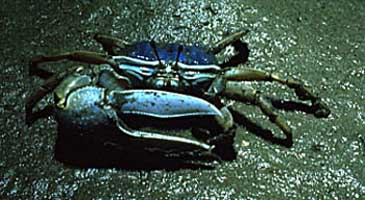
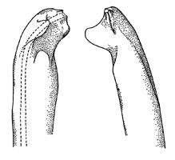

Fiddler Crabs
Uca monilifera
Necklaced Fiddler Crab
Type
Information
Photos
Video
Art
References
Species List
Type Description
Uca monilifera
Rathbun, M.J. (1915) New genera and species of American Brachyrhynchous crabs.
Proceedings of the United States National Museum
47(2047):117-129.
Information
Subgenus
Uca
Common Names
Necklaced Fiddler Crab
Synonyms, Alternate Spellings, & Name Forms
Uca (Uca) monilifera
,
Uca (Uca) princeps monilifera
,
Uca molinifera
,
Uca monilfera
,
Uca monilifera
,
Uca princeps monilifera
Geographic Range
Eastern Pacific: Northern Gulf of California
Map data derived from:
Brusca (1980)
;
Crane (1975)
;
Mangum & Greaves (1996)
External Links
Encyclopedia of Life
Wikipedia
iNaturalist
GBIF
Photos

Video
No videos available at this time.
Art

References
Agassiz, L. (?) Museum label.
Barnwell, F.H., and J.H. Stillman (1990) Differences in daily and tidal rhythms in populations of the fiddler crabs
Uca princeps
and
U. monilifera
.
American Zoologist
30(4):138A.
Bott, R. (1954) Dekapoden (Crustacea) aus El Salvador. 1. Winkerkrabben (
Uca
).
Senckenbergiana biologica
35(3-4):155-180.
Brusca, R.C. (1973)
A Handbook to the Common Intertidal Invertebrates of the Gulf of California
. Tucson, Arizona: University of Arizona Press.
Brusca, R.C. (1980)
Common Intertidal Invertebrates of the Gulf of California
. Second Edition. Tucson, Arizona: University of Arizona Press.
Crane, J. (1941) Eastern Pacific Expeditions of the New York Zoological Society. XXVI. Crabs of the genus
Uca
from the west coast of Central America.
Zoologica NY
26:145-208.
Dominguez Alonso, P. (2008) A new fiddler crab (genus
Uca
, Ocypodidae) from the Plio-Pleistocene from the Pacific coast of Honduras.
Ameghiniana
45(4):663-676.
Garth, J.S. (1960) Distribution and affinities of the brachyuran Crustacea.
Systematic Zoology
9(3):105-123.
Haney, B.R., and D.S. Pope (2007) Assessing the potential for sexual conflict in the fiddler crab
Uca princeps Integrative and Comparative Biology
47(Supplement):e46.
Maccagno, T. (1928) Crostacei Decapodi. Le specie del genere
Uca
Leach conservate nel Regio Museo Zoologico di Torino.
Bollettino dei Musei di Zoologia ed Anatomia comparata della R. Università di Torino
41(11):1-52.
Mangum, C.P. (1993) Structural polymorphisms of fiddler crab hemocyanins.
American Zoologist
33(5):64A.
Oliveira, L.P.H.d. (1939) Contribuição ao conhecimento dos crustaceos do Rio de Janeiro. Genero
Uca
(Decapoda: Ocypodidae).
Memórias do Instituto Oswaldo Cruz
34(1):115-148.
Rathbun, M.J. (1915) New genera and species of American Brachyrhynchous crabs.
Proceedings of the United States National Museum
47(2047):117-129.
Rathbun, M.J. (1918) The grapsoid crabs of America.
United States National Museum Bulletin
97:1-461.
Rathbun, M.J. (1926) The fossil stalk-eyed Crustacea of the Pacific slope of North America.
United States National Museum Bulletin
138:1-155.